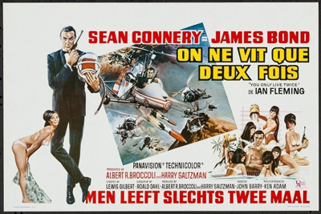
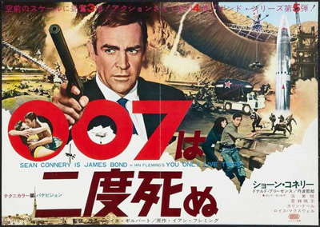
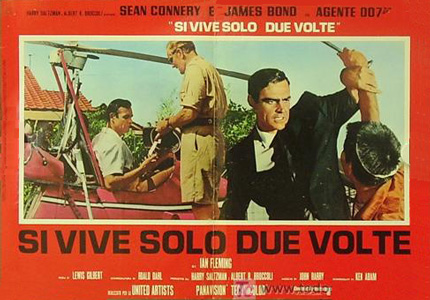
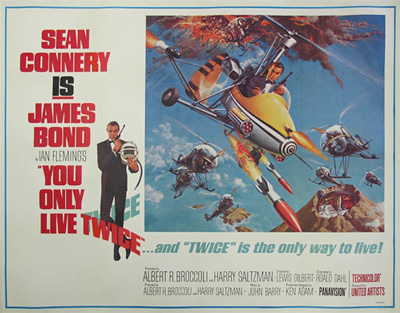

Harry Saltzman
Roald Dahl
An American NASA spacecraft is hijacked from orbit by an unidentified spacecraft. The United States suspect it to be the work of the Soviets, but the British suspect Japanese involvement since the spacecraft landed in the Sea of Japan. To investigate, MI6 operative James Bond is sent to Tokyo after faking his own death in Hong Kong and being buried at sea from HMS Tenby (F65).
Upon his arrival, Bond meets a mysterious Japanese woman while watching sumo. She introduces Bond to local MI6 operative Dikko Henderson. Henderson claims to have critical evidence about the rogue craft, but is killed before he can elaborate. Bond chases and kills the assailant, taking the assailant's clothing as a disguise and escapes in the getaway car, which goes to Osato Chemicals. Once there, Bond subdues the driver and breaks into the office safe of president Mr. Osato. After obtaining certain documents, Bond is pursued by armed security, but is rescued by the woman he had met earlier, who flees to a secluded subway station. Bond chases her, but falls down a trap door leading to the office of the head of the Japanese secret service, Tiger Tanaka. Tanaka reveals that the woman is his assistant Aki. The stolen documents are examined and found to include a photograph of the cargo ship Ning-Po with a microdot message saying the tourist who took the photo was killed as a security precaution. While at Tanaka's spa, Bond meets with Aki again and they spend the night together.
Bond goes to Osato Chemicals to meet Mr. Osato himself, masquerading as a potential new buyer. Osato humours Bond, but after their meeting he orders his secretary, Helga Brandt, to have him killed. Outside the building, assassins open fire on Bond before Aki rescues him again. Bond and Aki drive to Kobe, where the Ning-Po is docked. They investigate the company's dock facilities and discover that the ship was delivering elements for rocket fuel. They are discovered, but Bond eludes the henchmen until Aki gets away; however, Bond is captured. He wakes, tied up in SPECTRE operative Helga Brandt's cabin on the Ning-Po. In a sexy cocktail dress, she interrogates Bond, but he thinks of managing to bribe his way to freedom when she suddenly chooses to enjoy herself by kissing and freeing him in order to have sex. Brandt flies Bond to Tokyo the next day, but en route she sets off a flare in the plane and bails out, finally persuaded to kill him. Bond manages to land the plane.
After finding out where the Ning-Po unloaded, Bond flies over the area in a heavily armed autogyro created by Q. Near a volcano Bond is attacked by helicopters, which he defeats, confirming his suspicions that the enemy's base is nearby. A Soviet spacecraft is then captured in orbit by another unidentified craft, heightening tensions between Russia and the United States. The mysterious spaceship lands in an extensive base hidden inside the volcano. It soon turns out that the true mastermind behind this is Ernst Stavro Blofeld, the mysterious leader of SPECTRE who has been hired by the People's Republic of China to start a Soviet-American war. Blofeld summons Osato for not having killed Bond, who immediately blames his assistant, Brandt. Blofeld then gives Osato a last chance, but as Brandt leaves, he activates a mechanism that drops her into a pool filled with piranhas. Brandt is forced to pay for her failure with her life by being devoured alive, and Blofeld instructs Osato to kill Bond.
Bond is then informed of Tanaka's plan: he is to train with Tanaka's ninjas, disguise himself as a Japanese fisherman alongside a Japanese wife, and infiltrate SPECTRE's island. Before this plan can be completed, Aki is killed when she accidentally ingests poison that a SPECTRE assassin had meant for Bond to take. Bond quickly moves on and enters into a fake marriage to Tanaka's student, Kissy Suzuki. Acting on a lead from Suzuki, the pair reconnoitre a cave and the volcano above it. Establishing that the mouth of the volcano is a disguised hatch to the secret rocket base, Bond slips in, while Kissy goes to alert Tanaka. Bond locates and frees the captured astronauts and, with their help, steals a space suit in an attempt to infiltrate the SPECTRE spacecraft "Bird One." However, Blofeld spots Bond, and he is detained while Bird One is launched; Bond is taken into the control room where he meets Blofeld face-to-face for the first time.
Bird One closes in on the American space capsule, and United States forces prepare to launch a nuclear attack on the USSR. Meanwhile, the Japanese ninjas approach the base's entrance, but are detected and fired upon. Bond manages to open the hatch, letting in the ninjas. During the ensuing battle, Bond fights his way to the control room, kills Blofeld's bodyguard Hans by flipping his body into the piranha pool, and activates Bird One's self-destruct before it reaches the American craft. The Americans stand down their forces.
Blofeld, who had earlier killed Osato to demonstrate the price of failure to Bond, activates the base's self-destruct system and escapes. Bond, Kissy, Tanaka, and the surviving ninjas leave before the base explodes, and are picked up by the Japanese Maritime Forces and the British Secret Service.
When the time came to begin You Only Live Twice, the producers were faced with the problem of a disenchanted star. Sean Connery had stated that he was tired of playing James Bond and all of the associated commitment (time spent filming and publicising each movie), together with finding it difficult to do other work, which would potentially lead to typecasting. Saltzman and Broccoli were able to persuade Connery by increasing his fee for the film, but geared up to look for a replacement.
Jan Werich was originally cast by producer Harry Saltzman to play Blofeld. Upon his arrival at the Pinewood set, both producer Albert Broccoli and director Lewis Gilbert felt that he was a poor choice, resembling a "poor, benevolent Santa Claus". Nonetheless, in an attempt to make the casting work, Gilbert continued filming. After several days, both Gilbert and Broccoli determined that Werich was not menacing enough, and recast Blofeld with Donald Pleasence in the role. Pleasence's ideas for Blofeld's appearance included a hump, a limp, a beard, and a lame hand, before he settled on the scar. He found it uncomfortable, though, because of the glue that attached it to his eye.
Many European models were tested for Helga Brandt including German actress Eva Renzi who passed on the film, with German actress Karin Dor being cast. Dor performed the stunt of diving into a pool to depict Helga's demise, without the use of a double. Strangely, for the German version Dor was dubbed by somebody else.
Gilbert had chosen Tetsuro Tamba after working with him on The 7th Dawn. A number of martial arts experts were hired as the ninjas. The two Japanese female parts proved difficult to cast, due to most of the actresses tested having limited English. Akiko Wakabayashi and Mie Hama were eventually chosen and started taking English classes in the UK. Hama, initially cast in the role of Tanaka's assistant, had difficulty with the language, so the producers switched her role with Wakabayashi, who had been cast as Kissy, a part with significantly less dialogue. Wakabayashi only requested that her character name, "Suki", be changed to "Aki".
On Her Majesty's Secret Service was the intended next film, but the producers decided to adapt You Only Live Twice instead because On Her Majesty's Secret Service would require searching for high and snowy locations. Lewis Gilbert originally declined the offer to direct, but accepted after producer Albert Broccoli called him saying: "You can't give up this job. It's the largest audience in the world." Peter R. Hunt, who edited the first five Bond films, believed that Gilbert had been contracted by the producers for other work but they found they had to use him.
Gilbert, producers Broccoli and Harry Saltzman, production designer Ken Adam and director of photography Freddie Young then went to Japan, spending three weeks searching for locations. SPECTRE's shore fortress headquarters was changed to an extinct volcano after the team learned that the Japanese do not build castles by the sea. The group was due to return to the UK on a BOAC Boeing 707 flight (BOAC Flight 911) on 5 March 1966, but cancelled after being told they had a chance to watch a ninja demonstration. That flight crashed 25 minutes after takeoff, killing all on board. In Tokyo, the crew also found Hunt, who decided to go on holiday after having his request to direct declined. Hunt was invited to direct the second unit for You Only Live Twice and accepted the job.
Unlike most James Bond films featuring various locations around the world, almost the entire film is set in one country and several minutes are devoted to an elaborate Japanese wedding. This is in keeping with Fleming's original novel, which also devoted a number of pages to the discussion of Japanese culture. Toho Studios provided soundstages, personnel, and the female Japanese stars to the producers.
Filming of You Only Live Twice lasted from July 1966 to March 1967. The film was shot primarily in Japan. Himeji Castle in Hyogo Prefecture was depicted as Tanaka's ninja training camp. His private transportation hub was filmed at the Tokyo Metro's Nakano-shimbashi Station.
The Hotel New Otani Tokyo served as the outside for Osato Chemicals and the hotel's gardens were used for scenes of the ninja training. Bonotsu in Kagoshima served as the fishing village, the Kobe harbour was used for the dock fight and Mount Shinmoe-dake in Kyushu was used for the exteriors of SPECTRE's headquarters. Large crowds were present in Japan to see the shooting. A Japanese fan began following Sean Connery with a camera, and the police were called several times to prevent invasions during shooting.
The heavily armed WA-116 autogyro "Little Nellie" was included after Ken Adam heard a radio interview with its inventor, RAF Wing Commander Ken Wallis. Little Nellie was named after music hall star Nellie Wallace, who has a similar surname to its inventor. Wallis piloted his invention, which was equipped with various mock-up armaments by John Stears' special effects team, during production.
"Nellie's" battle with helicopters proved to be difficult to film. The scenes were initially shot in Miyazaki, first with takes of the gyrocopter, with more than 85 take-offs, 5 hours of flight and Wallis nearly crashing into the camera several times. A scene filming the helicopters from above created a major downdraft and cameraman John Jordan's foot was severed by the craft's rotor. The concluding shots involved explosions, which the Japanese government did not allow in a national park. So, the crew moved to Torremolinos, Spain, which was found to resemble the Japanese landscape. The shots of the volcano were filmed at Shinmoedake on Kyushu Island.
The sets of SPECTRE's volcano base were constructed at a lot inside Pinewood Studios, with a cost of $1 million and including operative heliport and monorail. The 45m (148ft) tall set could be seen from 5 kilometres (3 miles) away, and attracted many people from the region. Locations outside Japan included using the Royal Navy frigate HMS Tenby, then in Gibraltar, for the sea burial, Hong Kong for the scene where Bond fakes his death, and Norway for the Soviet radar station.
Sean Connery's then-wife Diane Cilento performed the swimming scenes for at least five Japanese actresses, including Mie Hama. Martial arts expert Donn F. Draeger provided martial arts training, and also doubled for Connery. Lewis Gilbert's regular editor, Thelma Connell, was originally hired to edit the film. However, after her initial, almost three-hour cut received a terrible response from test audiences, Peter R. Hunt was asked to re-edit the film. Hunt's cut proved a much greater success, and he was awarded the director's chair on the next film as a result.



